AIO・AI検索対策会社おすすめ11選｜料金・実績・AI引用診断で比較
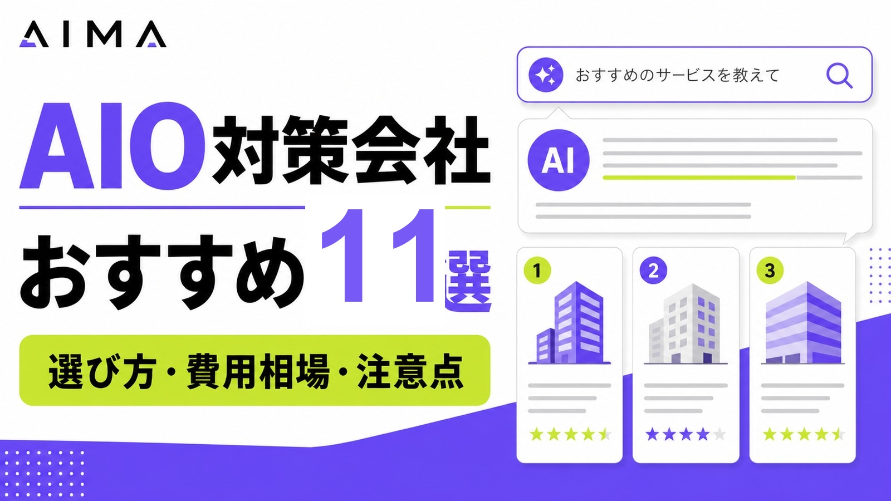
AIO対策会社やAI検索対策会社を選ぶなら、まず「AI回答で自社が引用されているか調査できるか」「記事改善まで実行できるか」「SEOとAI検索をまとめて見られるか」を確認しましょう。
中小企業が小さく始めるなら、月額費用、診断範囲、記事改善の有無を比較することが重要です。この記事では、AIO対策会社11社を料金目安・対応範囲・向いている企業で比較します。
AIO対策とは、Google AI Overviews、ChatGPT、Gemini、PerplexityなどのAI検索・生成AI回答で、自社や自社サイトの情報が引用・参照されやすい状態を作る施策です。AIOと近い考え方の基礎から確認したい方は、LLMO対策とは？SEOとの違いと実践方法も参考にしてください。
目次

AIO・AI検索対策会社おすすめ11選
AIO対策会社を選ぶ際は、対応範囲を確認することが大切です。AI検索での表示状況を調査するだけの会社もあれば、記事制作、既存記事のリライト、構造化データ、内部リンク改善、効果測定まで対応できる会社もあります。
まずは、AIO対策に対応できる会社を一覧で比較します。
| 会社名 | 料金目安 | 対応範囲 | 向いている企業 |
|---|---|---|---|
| 株式会社AIMA | 月額5万円（税別） | 質問設計、記事制作、引用チェック | コンテンツ制作からAIO対策を始めたい企業 |
| Hakuhodo DY ONE | 要問い合わせ | AIO診断、コンサルティング、ブランド視点の支援 | 大手企業・ブランド戦略まで含めて相談したい企業 |
| 株式会社CINC | 要問い合わせ | GEO/LLMO/AIO/AEOのAI検索最適化コンサルティング | データ分析を重視してAI検索対策を進めたい企業 |
| 株式会社メディアリーチ | 月額30万円〜 | SEOとLLMO/AIOの統合支援、分析、改善 | AI検索での露出状況をデータで把握し、改善まで進めたい企業 |
| 株式会社グラッドキューブ | 要問い合わせ | LLMO・AIO対策サービス、引用・推薦状況の可視化 | AI検索での引用・推薦状況を可視化したい企業 |
| ナイル株式会社 | 要問い合わせ | SEO、LLMOコンサルティング、コンテンツ改善 | SEOの土台を活かしてAI検索対策を進めたい企業 |
| 株式会社LANY | 要問い合わせ | SEO、コンテンツマーケティング、検索戦略設計 | 既存SEOの改善とあわせて進めたい企業 |
| 株式会社ジオコード | 要問い合わせ | SEO対策、AIO・LLMO、AI最適化 | SEO・サイト改善・AI対策を一括で任せたい企業 |
| 株式会社ニュートラルワークス | 要問い合わせ | AIO/LLMO対策の改善提案、サイト改修、実装 | サイト改修や外部対策まで含めて依頼したい企業 |
| 株式会社GIG | 要問い合わせ | Web制作、コンテンツ制作、AI検索最適化 | Web制作・コンテンツ・AI検索対策をまとめたい企業 |
| 株式会社シード | 要問い合わせ | AIO、LLMO、SEO対策の運用・コンサルティング | 広告やSEOも含めてWeb集客全体を見直したい企業 |
株式会社AIMA
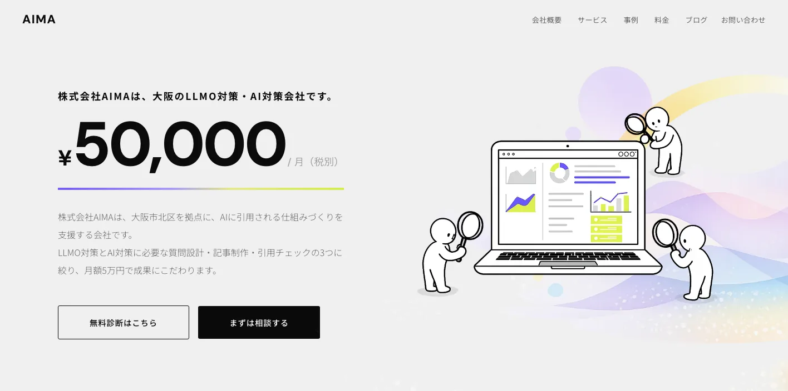
株式会社AIMAは、大阪市北区を拠点に、LLMO対策・AI対策を支援する会社です。AIに引用される仕組みづくりを重視し、質問設計、記事制作、引用チェックの3つに絞った支援を行っています。料金は月額5万円と明記されており、AIO対策を小さく始めたい企業にも検討しやすい内容です。
AIMAの強みは、SEOコンテンツ制作の実務を土台に、AIに拾われやすい記事設計まで対応できる点です。AI検索対策では、単にキーワードを入れるだけでなく、AIが回答に使いやすい定義、比較、FAQ、根拠、会社情報を整える必要があります。記事制作や既存記事の改善からAIO対策を始めたい企業に向いています。
Hakuhodo DY ONE
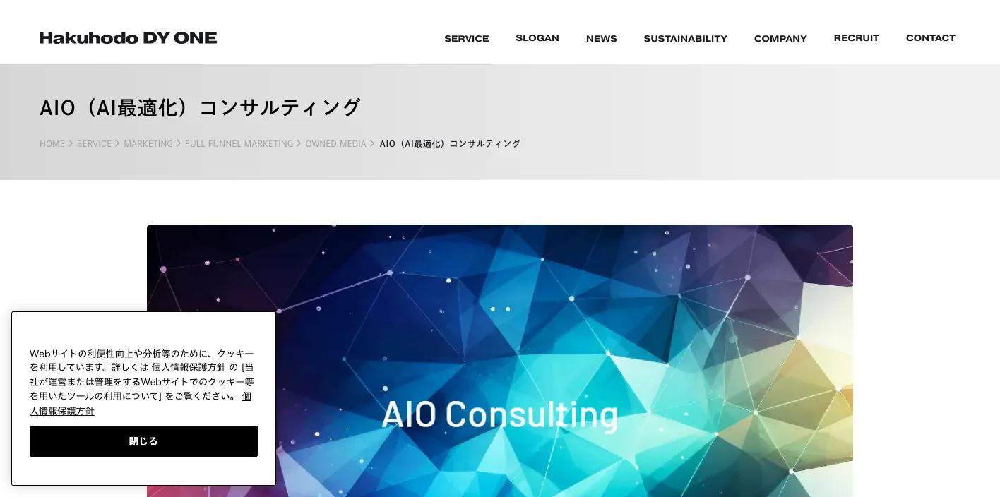
Hakuhodo DY ONEは、AIOを生成AIに特化した診断・コンサルティングサービスとして提供しています。ブランド名やサービス名が主要なAI検索エンジンの回答枠でどのように掲載・引用されているかを調査し、Webサイトの現状診断や改善施策につなげる支援を行っています。
また、Hakuhodo DY ONEは「ONE-AIO Lab」というAIO専門の研究開発組織も展開しています。AI検索におけるブランド戦略の設計や、事業成長につながる情報発信戦略を重視しているため、大手企業やブランド毀損リスクを避けながらAI検索対策を進めたい企業に向いています。
参考：Hakuhodo DY ONE｜AIO（AI最適化）コンサルティング
参考：Hakuhodo DY ONE｜ONE-AIO Lab
株式会社CINC

株式会社CINCは、AI検索最適化（GEO/LLMO/AIO/AEO）コンサルティングサービスを提供しています。主要生成AIモデルの回答内容やURL参照状況を取得・解析し、戦略策定から効果検証まで支援する点が特徴です。
無料診断では、Google AI Overviewsでの表示状況、自社ページの引用状況、生成AI回答上の自社・競合ページの引用率、AIクローラー向け対策状況などを確認できます。データをもとに現状を把握し、AI検索対策を進めたい企業に向いています。
参考：株式会社CINC｜AI検索最適化（GEO/LLMO/AIO/AEO）コンサルティングサービス
株式会社メディアリーチ
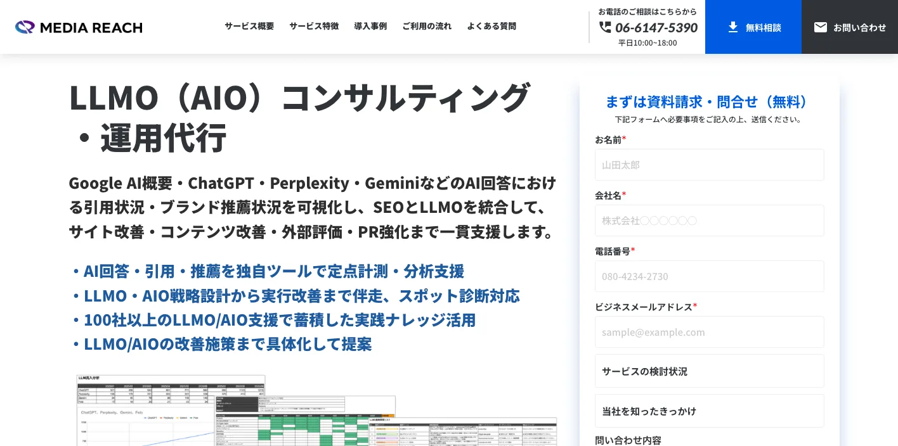
株式会社メディアリーチは、東京・大阪を拠点に全国対応でLLMO・AIOコンサルティングを提供するSEO・AI検索最適化支援会社です。国内でもいち早くLLMOサービスを展開し、2026年4月時点でLLMO・AIO支援実績は117社にのぼります。ChatGPT、Google AI Overviews、AIモード、Geminiなどにおける引用状況・ブランド推薦状況の調査から、戦略立案、コンテンツ設計、外部メディア露出、デジタルPR、サイテーション強化まで一気通貫で支援しています。
海外クライアントとの実証研究も含めた知見をもとに、AI引用率420％向上、AIブランド推奨率0％から90％向上といった成果実績も有しています。また、SEO・AI検索最適化プラットフォーム「DolphinX」を活用し、検索エンジンと生成AIの双方における可視性改善を支援。MarTech Outlook APACにより「アジア太平洋地域の生成AI検索最適化トップソリューション企業 2026」を受賞されています。
参考：株式会社メディアリーチ｜LLMO（AIO）コンサルティング・運用代行
参考：MarTech Outlook APAC｜Media Reach
株式会社グラッドキューブ
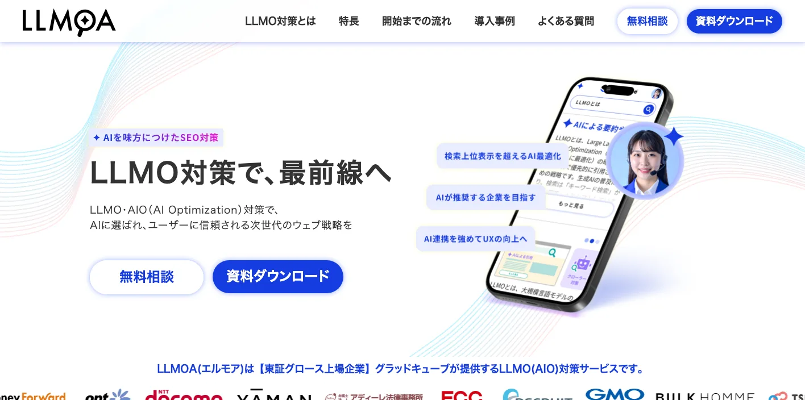
株式会社グラッドキューブは、LLMO・AIO対策サービス「LLMOA（エルモア）」を提供しています。LLMOAは、AI検索で自社がどのように評価されているかを分析し、競合状況を踏まえて改善すべき課題を特定するサービスです。
グラッドキューブは、Webマーケティングやサイト改善の支援実績も持つ会社です。AIO対策だけでなく、SEO、UX改善、Webサイト改善をあわせて進めたい企業に向いています。AI検索での引用・推薦を狙いながら、ユーザーにとっても使いやすいサイトへ改善したい場合に候補になります。
ナイル株式会社
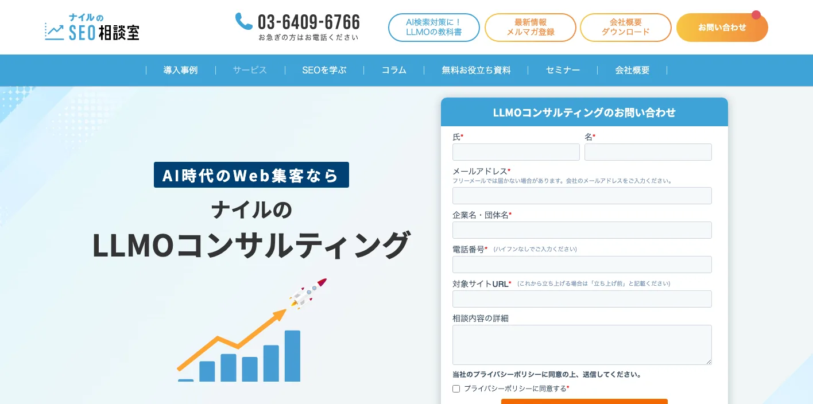
ナイル株式会社は、SEOコンサルティングやコンテンツ制作代行に加え、LLMOコンサルティングを提供しています。ナイルのLLMOコンサルティングは、SEOとLLMOを組み合わせ、ChatGPT、AIモード、AI Overviewsなどで自社が推薦される状態を設計する支援です。
ナイルはSEO領域での知見が豊富なため、既存SEOの改善とAI検索対策をセットで進めたい企業に向いています。すでにオウンドメディアやサービスサイトを運用しており、検索流入を維持しながらAI検索時代に対応したい場合に適しています。
株式会社LANY
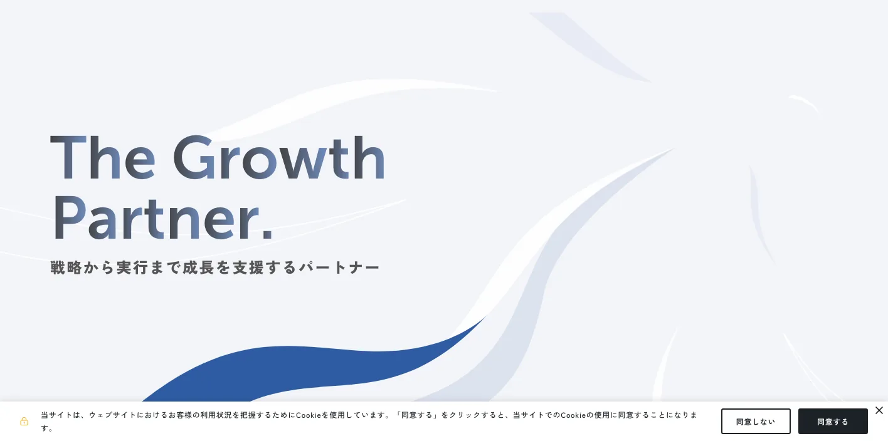
株式会社LANYは、SEOやコンテンツマーケティング、広告運用を中心に、デジタルマーケティングを支援する会社です。SEOの知見を活かしながら、AI検索時代のコンテンツ改善や情報設計を相談したい企業に向いています。
AIO対策では、検索順位だけでなく、AIにどのように想起・言及されているかを確認しながら改善することが重要です。LANYはSEOコンサルティングに強いため、既存コンテンツの改善やBtoBサイトの集客強化とあわせて進めたい場合に候補になります。
株式会社ジオコード
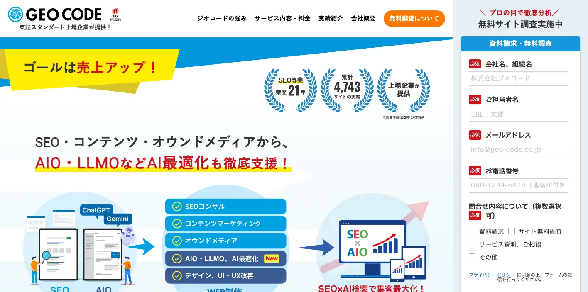
株式会社ジオコードは、SEO対策、コンテンツマーケティング、AIO・LLMO、AI最適化などをまとめて支援しています。SEO対策のサービスページでは、キーワード調査、サイトマップ作成、記事コンテンツ提案、UI設計、SEOコーディングなどの流れを示しています。
AIO対策では、AI検索の仕組みを理解し、SEOだけでなく情報設計まで対応できる会社を選ぶことが重要です。ジオコードはSEO支援を軸にしながら、AI検索時代の情報設計にも対応しているため、SEOとAIOを別々に考えず、総合的に相談したい企業に向いています。LLMO領域の会社比較は、LLMO対策会社おすすめ10選もあわせて確認できます。
参考：株式会社ジオコード｜SEO対策・AIO・LLMOなどAI最適化も徹底支援
参考：株式会社ジオコード｜AIO・LLMO・GEOとは？SEOとの違いと対策方法
株式会社ニュートラルワークス
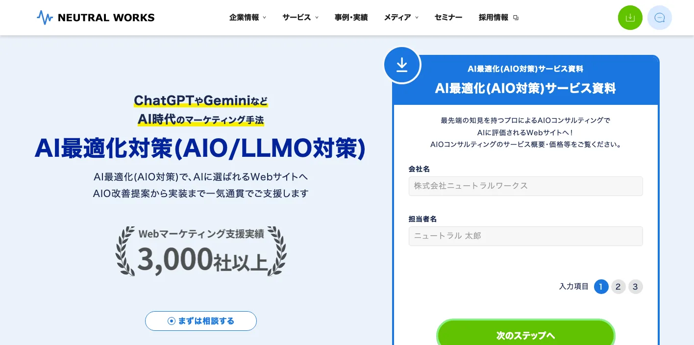
株式会社ニュートラルワークスは、AI最適化対策（AIO/LLMO対策）を提供しています。戦略立案のコンサルティングから外部対策、Webサイトの実装まで一貫して支援できる点が特徴です。
AIO対策では、記事改善だけでなく、サイト全体の構造や外部評価も関係します。ニュートラルワークスはWeb制作やサイト改修にも対応できるため、既存サイトの課題が大きい企業や、SEO・外部対策・サイト改善をまとめて進めたい企業に向いています。
参考：ニュートラルワークス｜AI最適化対策（AIO/LLMO対策）
株式会社GIG
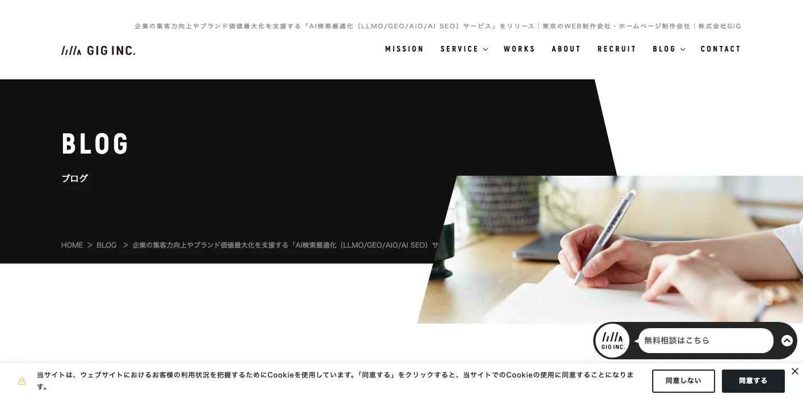
株式会社GIGは、AI検索最適化（LLMO/GEO/AIO/AI SEO）サービスを展開しています。企業の集客力向上やブランド価値最大化を目的に、企業情報を正しく届けるための支援を行っています。
GIGはWeb制作、マーケティング、コンテンツ制作の領域にも強みがあります。AIO対策だけを切り出すのではなく、Webサイト、記事、導線、ブランド情報の見せ方まで一体で改善したい企業に向いています。
参考：株式会社GIG｜AI検索最適化（LLMO/GEO/AIO/AI SEO）サービス
株式会社シード
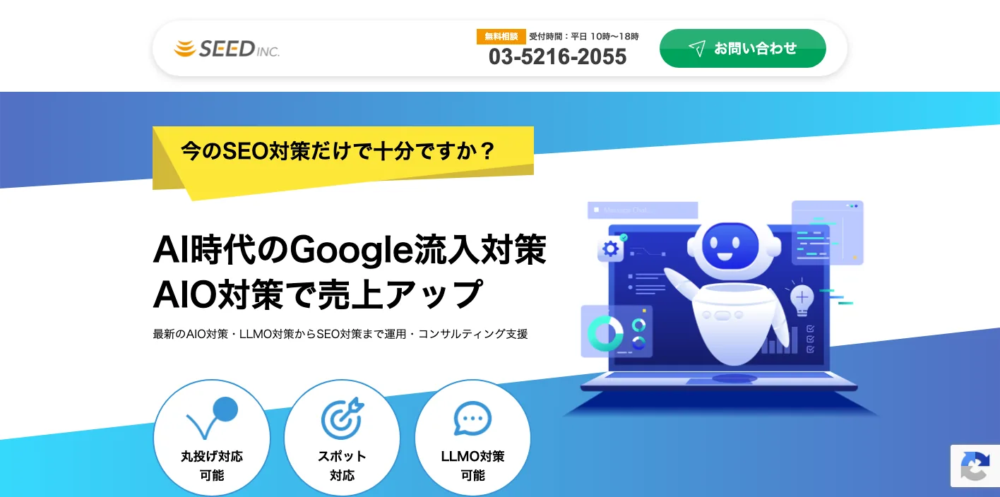
株式会社シードは、AIO対策、LLMO対策、SEO対策の運用・コンサルティング支援を提供しています。Google AI Overviewへの表示対策、LLMでの回答露出率の向上、キーワードに応じたSEOの上位表示対策に対応しています。
シードはWeb広告やデジタルマーケティングの支援も行っているため、AIO対策を単体ではなく、広告、SEO、コンテンツ改善とあわせて考えたい企業に向いています。Web集客全体のなかでAI検索対策の位置づけを決めたい場合に候補になります。
AIO対策会社を選ぶ前に知っておきたい基礎知識
AIO対策会社を比較する前に、AIO対策の意味やSEOとの違いを理解しておきましょう。ここが曖昧なままだと、「AIに出ます」といった表面的な提案に流されやすくなります。
AIO対策で見るべきポイントは、検索順位だけではありません。AIがどの情報源を参照しているか、自社名やサービス名がどのように扱われているか、比較検討の文脈で自社が候補に入っているかが重要です。
AIO対策とは
AIO対策とは、AI Optimizationの考え方にもとづき、AI検索や生成AIの回答で自社情報が引用・参照されやすい状態を作る施策です。対象になるのは、Google AI Overviews、AI Mode、ChatGPT、Gemini、Perplexityなどです。
Google AI Overviewsは、検索したトピックや質問に対して重要な情報をまとめ、関連リンクとともに表示します。ユーザーが検索結果のリンクを1つずつ開く前に、AI回答を見て概要を把握するため、AI回答内での露出は今後さらに重要になります。
AIO対策とSEO対策の違い
SEO対策は、Google検索などの検索結果で上位表示を目指す施策です。一方、AIO対策は、AIの回答内で引用・参照される状態を目指す施策です。
ただし、AIO対策はSEOを無視して成立するものではありません。Googleは、AI OverviewsやAI Modeに表示されるための追加要件はなく、基本的なSEOのベストプラクティスが引き続き重要だと説明しています。クロール、インデックス、内部リンク、ページ体験、テキストでの重要情報の提示、構造化データと可視情報の一致などは、AI検索時代でも重要です。
参考：Google Search Central｜AI features and your website
AIO対策とLLMO・GEOの違い
AIO、LLMO、GEOは近い意味で使われることが多い言葉です。AIOはAI全般に向けた最適化、LLMOは大規模言語モデルに理解・引用されやすくする施策、GEOは生成AIエンジンに最適化する施策として使われます。
実務上は、明確に切り分けるよりも「AI検索で自社情報が正しく引用・参照される状態を作る施策」と捉えたほうがわかりやすいです。会社によってAIO、LLMO、GEO、AEOなど呼び方は異なりますが、現状調査、情報設計、コンテンツ改善、技術改善、効果測定を行う点は共通しています。
AIO対策会社に依頼できる主な内容
AIO対策会社に依頼できる内容は、会社によって異なります。診断だけを行う会社もあれば、記事制作、サイト改修、構造化データ、外部評価の強化まで対応する会社もあります。
依頼前に、どこまで対応してもらえるのかを確認しておくことが重要です。
AI検索での表示状況調査
最初に行うべきことは、AI検索での現状調査です。自社名、サービス名、主要キーワード、比較キーワードを使い、ChatGPT、Gemini、Perplexity、Google AI Overviewsなどで自社や競合がどのように表示されているかを確認します。
たとえば「おすすめの〇〇会社」「〇〇 比較」「〇〇 費用」などの質問で、競合だけがAI回答に表示されている場合、自社サイトの情報量や構成に課題がある可能性があります。現状調査を行うことで、どのキーワードや質問から対策すべきか判断しやすくなります。
AIに引用されやすいコンテンツ設計
AIO対策では、AIが回答に使いやすい形で情報を整えることが重要です。具体的には、定義、比較、選び方、費用相場、注意点、FAQ、事例、会社情報などを明確にします。
AIは、曖昧な表現や抽象的な文章よりも、質問に対する答えが明確なページを参照しやすくなります。そのため、記事の冒頭で結論を示し、見出しごとに一つのテーマを扱い、比較表やFAQで情報をまとめることが大切です。
既存記事のリライト・改善
すでにSEO記事を持っている場合は、新規記事を増やす前に既存記事を改善する方法があります。検索順位は取れているもののAI回答に引用されていない記事は、構成や情報の出し方を見直す余地があります。
具体的には、定義の追加、比較表の追加、FAQの追加、一次情報の追記、内部リンクの改善、会社情報への導線設計などを行います。既存記事の評価を活かせるため、新規記事より早く改善につながるケースもあります。
会社情報・サービス情報の整備
AIO対策では、記事だけでなく、会社概要、サービスページ、料金ページ、事例ページ、FAQページも重要です。AIが会社やサービスを正しく理解するには、サイト全体で情報が一貫している必要があります。
社名、サービス名、対象顧客、対応範囲、料金、実績、導入事例、よくある質問などを明確にすることで、AIが企業情報を把握しやすくなります。特にBtoB企業では、比較検討時に「どの会社が何に強いのか」がAIに伝わる状態を作ることが重要です。
構造化データ・内部リンクの改善
構造化データは、ページ内容を検索エンジンに伝えやすくするための標準化された形式です。Googleは構造化データを、ページ内容やページ内に含まれる会社、人物、商品などの情報を理解するために利用します。
参考：Google Search Central｜Introduction to structured data markup in Google Search
ただし、Google AI OverviewsやAI Modeに表示されるために、特別なschema.org構造化データやAI用ファイルを追加する必要はありません。構造化データは重要ですが、ページに表示されている内容と一致していることが前提です。見せかけのマークアップではなく、ユーザーにもAIにも伝わる情報設計が必要です。
参考：Google Search Central｜AI features and your website
効果測定・レポーティング
AIO対策は、一度施策を実施して終わりではありません。AI回答は変動するため、定期的に表示状況を確認する必要があります。
確認すべき指標は、AI回答への表示状況、引用元、検索順位、自然検索流入、指名検索数、問い合わせ数、CV率などです。AI検索単体の数値だけでなく、検索全体の流入や成果もあわせて見ることが大切です。
AIO対策会社の選び方
AIO対策会社を選ぶときは、流行語だけで判断しないことが大切です。AIO、LLMO、GEOという言葉を使っていても、実際の支援内容は会社によって大きく異なります。
特に見るべきポイントは、SEOの理解、現状調査の精度、コンテンツ制作力、一次情報の整理力、効果測定の設計です。AI検索対策会社として比較する場合も、見積もりの中に「対象AI」「確認する質問」「作る記事」「直すページ」「改善後の確認」が入っているかを見てください。
会社タイプは、大きく低予算実行型・SEO大手型・ツール型に分けて見ると整理しやすくなります。低予算実行型は記事作成や既存ページ修正まで小さく進めたい会社向け、SEO大手型はサイト全体の改善も含めて広く見たい会社向け、ツール型は計測や比較を内製したい会社向けです。
SEOとAIOを分けずに説明できるか
AIO対策は、SEOと切り離して考えるものではありません。Google検索におけるAI機能でも、基本的なSEOのベストプラクティスは引き続き重要です。クロールされること、インデックスされること、重要情報がテキストで読めること、内部リンクで発見されやすいことは、AI検索でも土台になります。
参考：Google Search Central｜AI features and your website
そのため、「SEOは古い」と断言する会社には注意が必要です。SEOの基盤を理解したうえで、AI検索に対応した情報設計を提案できる会社を選びましょう。
AI検索での現状調査に対応しているか
AIO対策を始める前に、AI検索でどう扱われているかを確認する必要があります。現状調査をせずに記事制作だけを進めても、どのテーマを優先すべきか判断できません。
良い会社は、自社名、サービス名、比較キーワード、悩み系キーワードなどをもとに、AI回答での露出状況を調べます。そのうえで、競合との差分、足りない情報、改善すべきページを明確にします。
コンテンツ制作まで対応できるか
AIO対策は、診断だけでは成果につながりにくい施策です。AI検索での課題がわかっても、実際に記事やサービスページを改善しなければ状態は変わりません。
そのため、記事構成、本文作成、既存記事リライト、FAQ作成、比較表作成、サービスページ改善まで対応できる会社を選ぶと実行しやすくなります。社内にライターや編集者がいない場合は、制作まで任せられる会社のほうが向いています。
一次情報を引き出せるか
AIに引用されるためには、どこにでもある一般論だけでは不十分です。自社ならではの実績、事例、料金、対応範囲、強み、顧客の声、比較ポイントなどの一次情報が必要です。
AIO対策会社を選ぶときは、単に記事を書く会社ではなく、ヒアリングを通じて自社の強みを引き出し、AIにもユーザーにも伝わる形に変換できる会社を選びましょう。
効果測定の指標が明確か
AIO対策では、「AIに出たかどうか」だけでなく、事業成果につながっているかを見る必要があります。AI回答への表示状況、引用元、検索順位、流入、問い合わせ、商談化などを組み合わせて評価します。
表示保証を強く打ち出す会社よりも、現状調査、改善、再調査、次の施策提案までの流れを明確にしている会社のほうが現実的です。
AIO対策会社の費用相場
AIO対策の費用は、診断だけか、記事制作や既存ページ修正まで含むかで大きく変わります。会社選びの記事では細かい相場を追いすぎず、見積もりに含まれる作業範囲を確認しましょう。具体的な料金目安、見積もりで見る項目、低予算で始める流れはAIO対策の費用相場を解説した記事で詳しく整理しています。
AIO対策会社に依頼するメリット
AIO対策は自社でも取り組めますが、最初からすべてを社内で進めるのは簡単ではありません。AI検索の調査、競合分析、記事設計、効果測定まで行うには、SEOとAI検索の両方の知識が必要です。
AIO対策会社に依頼すると、現状把握から実行までのスピードを上げやすくなります。
AI検索での見え方を客観的に把握できる
自社で検索しているだけでは、AIが自社をどう扱っているのかを正確に把握しにくい場合があります。AIO対策会社に依頼すると、複数のAI検索エンジンや生成AIツールで、自社と競合の表示状況を比較できます。
自社が候補に入っていない質問、競合が引用されているページ、足りない情報を把握できるため、改善の優先順位を決めやすくなります。
SEOとAI検索対策を同時に進められる
AIO対策は、SEOの延長線上にある施策です。検索エンジンに正しく理解されるページは、AI検索でも参照されやすくなる可能性があります。
SEOとAIOを同時に進めることで、検索順位の改善、AI回答での露出、問い合わせ増加をまとめて狙えます。特にBtoB企業や比較検討型のサービスでは、検索結果とAI回答の両方に接点を作ることが重要です。
社内にない知見を短期間で補える
AIO対策はまだ新しい領域です。社内にSEO担当者がいても、AI検索での引用状況やLLMの回答傾向まで継続的に見ているケースは多くありません。
外部会社を活用すれば、調査方法、改善方針、記事設計、効果測定の型を短期間で取り入れられます。最初は外部会社と一緒に進め、徐々に社内運用へ移行する方法もあります。
AIO対策会社に依頼する前の注意点
AIO対策は魅力的な施策ですが、過度な期待は禁物です。AI回答への表示はコントロールできるものではなく、検索エンジンや生成AIの仕様変更にも影響されます。
依頼前に、成果の考え方やリスクを理解しておきましょう。
AI回答への表示は保証できない
AIO対策は、AIに引用されやすい状態を作る施策であり、表示を保証するものではありません。Google検索でも、ページが要件やベストプラクティスを満たしていても、クロール、インデックス、表示は保証されていません。
参考：Google Search Central｜How Search Works
そのため、「必ずAIに出る」と断言する会社には注意が必要です。成果を保証する言葉よりも、どのページをどう改善し、どの指標で変化を見るのかを確認しましょう。
短期間で成果が出るとは限らない
AIO対策は、すぐに効果が出るとは限りません。既存サイトの評価、コンテンツ量、競合状況、AI回答の変動によって成果が出るまでの期間は変わります。
すでに検索順位があり、情報が整っているサイトなら早く変化が見える可能性があります。一方で、会社情報やサービス情報が不足しているサイトでは、まず土台作りから必要になります。
診断だけで終わると成果につながりにくい
AIO対策でよくある失敗は、診断だけで終わることです。AI検索での表示状況や課題がわかっても、記事やサイトを改善しなければ状態は変わりません。
依頼前には、診断後にどこまで実行してもらえるのかを確認しましょう。記事制作、リライト、FAQ作成、サービスページ改善、内部リンク改善、効果測定まで対応できる会社のほうが成果につなげやすくなります。
AIO対策会社に依頼する流れ
AIO対策会社に依頼する流れは、現状調査から効果測定までの順で進みます。いきなり大量の記事を作るのではなく、AI検索での現状を確認してから着手することが重要です。
1. 現状調査を行う
まず、自社名、サービス名、主要キーワード、比較キーワードでAI検索の表示状況を確認します。ChatGPT、Gemini、Perplexity、Google AI Overviewsなどで、自社や競合がどのように表示されるかを調査します。
この段階で、自社が表示されていない質問や、競合だけが引用されているテーマを見つけます。
2. 対策キーワードを決める
次に、対策すべきキーワードや質問を決めます。売上につながりにくい情報系キーワードよりも、比較、費用、選び方、おすすめ、導入事例など、問い合わせに近いテーマを優先します。
AIO対策では、単一キーワードだけでなく、ユーザーがAIに投げる質問文を想定することが重要です。
3. 記事・サービスページを改善する
対策テーマが決まったら、記事やサービスページを改善します。定義、比較、費用相場、選び方、注意点、FAQ、事例、会社情報などを追加し、AIが参照しやすい構成にします。
既存記事がある場合は、いきなり新規記事を増やすよりも、成果に近いページから改善するほうが効率的です。
4. AI検索での表示状況を再確認する
改善後は、同じ質問やキーワードでAI回答の変化を確認します。自社名が出るようになったか、引用元が変わったか、競合との差分が縮まったかを見ます。
AI回答は変動するため、1回の確認だけで判断せず、定期的に観測することが大切です。
AIO対策会社に関するよくある質問
AIO対策はSEO対策と何が違いますか？
SEO対策は、検索結果で上位表示を目指す施策です。AIO対策は、AI検索や生成AIの回答で自社情報が引用・参照されやすい状態を作る施策です。
ただし、AIO対策はSEOと完全に別物ではありません。GoogleのAI機能でも、基本的なSEOのベストプラクティスは引き続き重要です。
参考：Google Search Central｜AI features and your website
AIO対策会社に依頼すれば必ずAIに表示されますか？
必ず表示されるとは限りません。AIO対策は、AIに理解・引用されやすい状態を作る施策であり、表示保証ではありません。
Google検索でも、クロール、インデックス、表示は保証されていません。AIO対策でも、表示保証ではなく、表示される可能性を高めるための改善として考える必要があります。
参考：Google Search Central｜How Search Works
AIO対策は自社でもできますか？
基本的な対策は自社でもできます。会社情報の整備、FAQの追加、既存記事のリライト、比較表の追加、内部リンクの改善などは、自社でも取り組めます。
ただし、複数のAI検索エンジンでの表示状況調査、競合分析、記事設計、継続的な効果測定まで行う場合は、専門会社に依頼したほうが早いケースがあります。
AIO対策の費用はどれくらいですか？
費用は依頼範囲によって変わります。AIO対策のコンサルティングは月額15万〜50万円、コンテンツ改善は5万〜30万円、SEOとの総合支援は月額30万〜80万円程度が一つの目安です。
参考：NEXER｜AIO対策の費用相場はいくら？料金目安・高くなる理由・外注先の選び方
最初から大きな予算をかけるのではなく、現状調査や既存記事の改善から始め、成果を見ながら範囲を広げる方法が現実的です。
AIO対策はどの業種に向いていますか？
AIO対策は、比較検討されやすい業種と相性が良いです。BtoBサービス、SaaS、士業、医療、美容、不動産、人材、教育、ECなどは、ユーザーが「おすすめ」「比較」「費用」「選び方」といった質問をしやすいため、AI検索対策に取り組む価値があります。
特に、問い合わせ前に情報収集される商材や、複数社を比較されるサービスでは、AI回答内で候補に入ることが重要になります。
まとめ｜AIO対策会社はSEO・情報設計・コンテンツ改善まで対応できる会社を選ぼう
AIO対策会社を選ぶときは、「AIに強い」という言葉だけで判断しないことが大切です。AIO対策は、AI検索で自社情報が引用・参照されやすい状態を作る施策ですが、その土台にはSEO、情報設計、コンテンツ品質、会社情報の整備があります。
Googleは、AI OverviewsやAI Modeに表示されるための追加要件や特別な最適化はなく、基本的なSEOのベストプラクティスが引き続き重要だと説明しています。つまり、AIO対策で成果を出すには、AIだけを見るのではなく、検索エンジンにもユーザーにも伝わるサイトを作る必要があります。
参考：Google Search Central｜AI features and your website
まずは、自社名、サービス名、主要キーワードでAI検索の表示状況を確認しましょう。自社の見え方を先に確認したい場合は、無料LLMO診断から始める方法もあります。そのうえで、競合との差分を把握し、記事やサービスページを改善していくことがAIO対策の第一歩です。